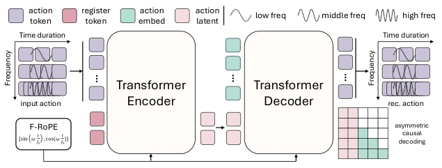
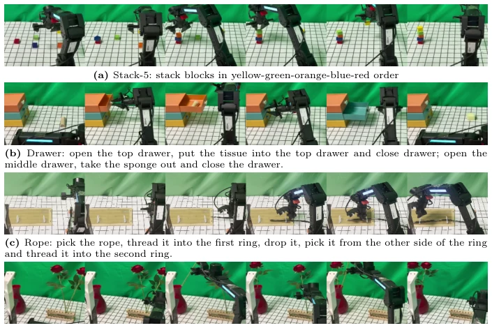

这篇论文给机器人动作表示领域又添了一把火。CAT 框架试图把动作轨迹压缩成固定数量的潜在 token，听起来像是给无限长的视频流装了个定长 U 盘，试图解决控制频率膨胀的老大难问题。F-RoPE 的设计确实巧妙，让不同频率的动作在同一个时间坐标系里“说同一种语言”。不过，这种“轨迹级”表示本质上还是 Transformer 的变体，所谓的“解耦”可能只是把问题从时序维度转移到了潜在空间维度，压缩率高了会不会丢失细节？实验结果在 LIBERO 和真实世界任务上确实亮眼，尤其是长 horizon 任务，但考虑到 VLA 模型本身的容量，这种提升有多少是归因于表示学习，有多少是归因于模型架构的优化，还有待深究。总的来说，是个扎实的工程改进，但别指望它能颠覆现有的扩散策略范式，毕竟“换汤不换药”在 AI 圈太常见了，且固定 token 数在极端复杂任务下可能成为瓶颈。
This paper adds further fuel to the fire in the field of robot action representation. The CAT framework attempts to compress action trajectories into a fixed number of latent tokens, which sounds like installing a fixed-length USB drive on an infinitely long video stream, attempting to solve the longstanding and difficult problem of control frequency expansion. The design of F-RoPE is indeed ingenious, allowing actions of different frequencies to "speak the same language" within the same time coordinate system. However, this "trajectory-level" representation is essentially a variant of the Transformer; the so-called "decoupling" may merely shift the problem from the temporal dimension to the latent space dimension. Will high compression rates lead to loss of details? Experimental results are indeed impressive on LIBERO and real-world tasks, especially long horizon tasks. However, considering the capacity of the VLA model itself, how much of this improvement is attributable to representation learning, how much is attributable to model architecture optimization, remains to be deeply investigated. Overall, it is a solid engineering improvement, but do not expect it to overturn the existing diffusion policy paradigm, after all "changing the soup but not the medicine" is too common in the AI community, and fixed token numbers may become a bottleneck in extremely complex tasks.
Current visual-motor policy learning faces an awkward structural contradiction: action representations are often bound to the time grid. When control frequency increases, timestep-level discretization causes representation length to grow proportionally, introducing significant temporal redundancy [8, 12]. To avoid this problem, some methods adopt predefined time reparameterization, but this limits the representation structure and cannot flexibly capture key motion segments. Especially in manipulation tasks, only partial trajectory segments (such as contact transitions, interaction switches) are crucial for task success, while the rest are often smooth and repetitive. Existing representation methods struggle to retain these local key information while maintaining compactness, leading to gradient dilution. CAT aims to break this dependence on predefined time design, achieving sampling-rate-independent trajectory-level continuous representation, thereby improving policy robustness under different control frequencies and stability in long horizon tasks. Furthermore, existing methods like Diffusion Policy [5] can generate continuous actions, but have not yet broken free from the shackles of timestep alignment, making it difficult to adapt to multi-frequency scenarios.
方法Method
CAT 的整体架构由频率感知的 Transformer 编码器和解码器组成，核心流程是将固定实时窗口内的动作序列映射为固定数量的连续潜在 token。首先，通过结构解耦（Structural Decoupling），无论输入动作序列的步数 N 如何随频率变化，编码器始终输出 K 个固定数量的潜在 token，利用可学习的 register tokens 聚合轨迹级信息，避免表示维度随时间网格膨胀。其次，为了解决不同频率下的时间对齐问题，方法引入了频率感知旋转位置编码（F-RoPE），将时间步索引 t 缩放为 t/fs，使不同采样率的动作嵌入到共享的时间坐标系中，确保频率信息被编码进潜在表示。训练目标包含两部分：一是动作重建损失，保证解码后的轨迹与原始动作一致；二是轨迹级对比正则化损失，强制不同语义的轨迹在潜在空间中保持距离，防止重叠。最后，CAT 无缝集成到基于扩散的 VLA 框架中，替换原有的 timestep-level 动作参数化，利用流匹配（Flow Matching）在潜在空间进行去噪生成，解码器采用非对称因果注意力掩码以维持时序因果性，确保动作生成的连贯性。
The overall architecture of CAT consists of a frequency-aware Transformer encoder and decoder, with the core process mapping action sequences within a fixed real-time window to a fixed number of continuous latent tokens. First, through Structural Decoupling, regardless of how the number of steps N in the input action sequence varies with frequency, the encoder always outputs K fixed latent tokens, utilizing learnable register tokens to aggregate trajectory-level information and avoiding representation dimension expansion with the time grid. Second, to address the time alignment problem under different frequencies, the method introduces Frequency-aware Rotary Positional Embedding (F-RoPE), scaling the timestep index t to t/fs, embedding actions of different sampling rates into a shared time coordinate system, ensuring frequency information is encoded into the latent representation. The training objective includes two parts: one is action reconstruction loss, ensuring the decoded trajectory is consistent with the original action; the second is trajectory-level contrastive regularization loss, forcing trajectories with different semantics to maintain distance in the latent space, preventing overlap. Finally, CAT is seamlessly integrated into the diffusion-based VLA framework, replacing the original timestep-level action parameterization, utilizing Flow Matching for denoising generation in the latent space, and the decoder adopts asymmetric causal attention masks to maintain temporal causality, ensuring action generation coherence.

Fig. 1: Overview of CAT. CAT performs trajectory-level continuous action model- ing over action sequences defined within a fixed real-time window. A frequency-aware transformer encoder with F-RoPE injection maps each action sequence to a fixed set of continuous latent variables. An asymmetric causal decoder reconstructs the action sequence in a frequency-conditioned manner, enabling temporally consistent modeling across varying control rates.
The paper conducted extensive evaluation on LIBERO, MimicGen, RoboTwin 2.0, and real-world long horizon tasks. Baselines include SmolVLA, Diffusion Policy, VQ-VLA, and pi0, etc. On LIBERO, SmolVLA-CAT average success rate improved to 90.8%, superior to the original SmolVLA's 87.3%. On MimicGen, DP-CAT also achieved an average success rate of 86.9%. Especially in the multi-frequency evaluation of RoboTwin 2.0, CAT maintained stable performance under different control rates from 10Hz to 50Hz, significantly outperforming baselines, proving its frequency robustness. In real-world tasks (such as Stack-5, Drawer), CAT improved the average score from 45.0 to 60.5. Ablation studies show that F-RoPE positional encoding is superior to learnable encoding, regularization weight λreg=0.1 yields the best effect, and causal attention is superior to full attention. These results verify the effectiveness of trajectory-level representation in decoupling control frequency and action representation, especially performing outstandingly in long horizon tasks.

Fig. 4: Qualitative results on real-world tasks. Representative examples include tasks from Stack-5, Drawer, Rope, and Flower.